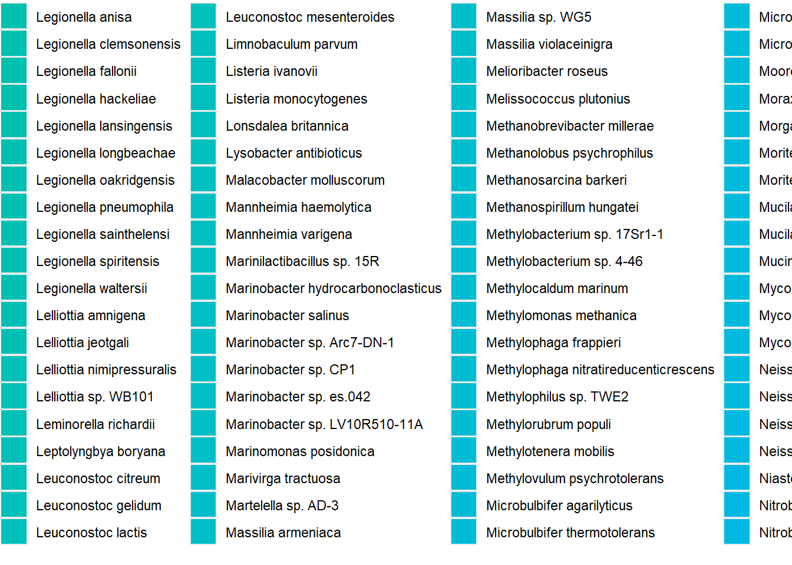

Metagenomics
Data Structure:
The data structure of this project is the next one:
Note 1: The data need it for this project is property of “Hogeschool Utrecht, thus due copyright and privacy laws I’m not avaible to share most of data used for this experiment.But you can still read the documentation and code of this experiment.
Note 2: The language used in this is project is Dutch
Onderdeel 1
FastQC genereren
# activate environment
conda activate meta
# perform FastQC analysis
fastqc -o ~/metagenomics/data/fastqc_output
/home/daur2/metagenomics/formative_data/HU2_MOCK2_L001_R1_001.fastq.gz
fastqc -o ~/metagenomics/data/fastqc_output
/home/daur2/metagenomics/formative_data/HU2_MOCK2_L001_R2_001.fastq.gz
# deactivate conda virtual environment
conda deactivateOnderdeel 2
Kraken2 uitvoeren
# activate environment
conda activate meta
kraken2 --db /home/daur2/metagenomics/minikraken2_v2_8GB_201904_UPDATE/ --threads 2 --paired --gzip-compressed --output ~/metagenomics/mock2/mock2.kraken --report ~/metagenomics/data/mock2/mock2.report --use-names /home/daur2/metagenomics/formative_data/HU2_MOCK2_L001_R1_001.fastq.gz /home/daur2/metagenomics/formative_data/HU2_MOCK2_L001_R2_001.fastq.gz
conda deactivateEr zijn 65915836 sequences verwerkt, waarvan 59541308 zijn geklassificeerd en 6374528 niet zijn geklassificeerd. De procedure heeft 963.827 seconden, 16,06 minuten, geduurd (4103.4 Kseq/m, 1210.17 Mbp/m).
Onderdeel 3
Read count visualisatie per kingdom
data_mock2 <- here::here("projects/metagenomics/data/mock2/mock2_bracken_species.biom")
merged_metagenomes_mock2 <- import_biom(data_mock2)# Verwijder taxonomische informatie uit waarden/ verwijder eerste vier tekens
merged_metagenomes_mock2@tax_table@.Data <-
substring(merged_metagenomes_mock2@tax_table@.Data, 4)
# Hernoem kolomkoppen naar informatieve indeling
colnames(merged_metagenomes_mock2@tax_table@.Data) <-
c("Kingdom", "Phylum", "Class", "Order", "Family", "Genus", "Species")
# Haal de aanwezige taxonomische rijken uit onze data op
unique(merged_metagenomes_mock2@tax_table@.Data[,"Kingdom"])## [1] "Bacteria" "Eukaryota" "Archaea" "Viruses"Er zitten bacteriën, eukaryoten, archaea en virus genomen in de dataset. Het kan zijn dat de virus genomen in de dataset zijn gekomen door contaminatie.
# Subset rijken (Kingdoms)
merged_metagenomes_mock2_b <- subset_taxa(merged_metagenomes_mock2, Kingdom == "Bacteria")
merged_metagenomes_mock2_e <- subset_taxa(merged_metagenomes_mock2, Kingdom == "Eukaryota")
merged_metagenomes_mock2_a <- subset_taxa(merged_metagenomes_mock2, Kingdom == "Archaea")
merged_metagenomes_mock2_v <- subset_taxa(merged_metagenomes_mock2, Kingdom == "Viruses")
# Hernoemd samples
sample_names(merged_metagenomes_mock2_b) <- "bacteria"
sample_names(merged_metagenomes_mock2_e) <- "eukaryote"
sample_names(merged_metagenomes_mock2_a) <- "archea"
sample_names(merged_metagenomes_mock2_v) <- "virus"
# Telt het aantal reads in totaal
sample_sums(merged_metagenomes_mock2)## sa1
## 59538284# Telt het aantal reads per rijk (kingdom)
c(sample_sums(merged_metagenomes_mock2_b), sample_sums(merged_metagenomes_mock2_e), sample_sums(merged_metagenomes_mock2_a), sample_sums(merged_metagenomes_mock2_v))## bacteria eukaryote archea virus
## 59491948 18373 263 27700# Verzamel de rijken (kingdoms)in data frames
data_mock2_b <- data.frame(Samples = sample_names(merged_metagenomes_mock2_b),
Reads = sample_sums(merged_metagenomes_mock2_b))
data_mock2_e <- data.frame(Samples = sample_names(merged_metagenomes_mock2_e),
Reads = sample_sums(merged_metagenomes_mock2_e))
data_mock2_a <- data.frame(Samples = sample_names(merged_metagenomes_mock2_a),
Reads = sample_sums(merged_metagenomes_mock2_a))
data_mock2_v <- data.frame(Samples = sample_names(merged_metagenomes_mock2_v),
Reads = sample_sums(merged_metagenomes_mock2_v))
# Voeg kingdom data in een dataframe
data_mock2_t <- rbind(data_mock2_b, data_mock2_e, data_mock2_a, data_mock2_v)
# Plot het aantal reads per rijk
ggplot(data = data_mock2_t, mapping = aes(x = Samples, y = Reads, fill = Samples )) +
geom_col() +
theme_classic() +
ggtitle("Read count per kingdom") +
theme(plot.title = element_text(hjust = 0.5)) +
theme(axis.text.x=element_text(angle=45, hjust=1))Visualiseren van geïdentificeerde soorten
# Herlaad de biom-gegevens, bewerk kolomkoppen en sample name
merged_metagenomes_mock2 <- import_biom(data_mock2)
merged_metagenomes_mock2@tax_table@.Data <- substring(merged_metagenomes_mock2@tax_table@.Data, 4)
colnames(merged_metagenomes_mock2@tax_table@.Data)<- c("Kingdom", "Phylum", "Class", "Order", "Family", "Genus", "Species")
colnames(merged_metagenomes_mock2@otu_table) <- c("mock2")
# check lege labels (empty = TRUE)
summary(merged_metagenomes_mock2@tax_table@.Data== "")## Kingdom Phylum Class Order
## Mode :logical Mode :logical Mode :logical Mode :logical
## FALSE:863 FALSE:847 FALSE:835 FALSE:861
## TRUE :16 TRUE :28 TRUE :2
## Family Genus Species
## Mode :logical Mode :logical Mode :logical
## FALSE:860 FALSE:855 FALSE:863
## TRUE :3 TRUE :8# transformeer data frame voor plotten
glom_mock2 <- tax_glom(merged_metagenomes_mock2, taxrank = "Species")
mock2_metagenome_species <- psmelt(glom_mock2)
# Combineer genus- en soortlabels voor wetenschappelijke benaming in de plot
mock2_metagenome_species$Species <- as.character(mock2_metagenome_species$Species)
mock2_metagenome_species$Species <- paste(mock2_metagenome_species[,]$Genus,mock2_metagenome_species[,]$Species, sep=" ", collapse=NULL)
# Controleer labelmanipulatie
#unique(mock2_metagenome_species$Species)
id_species_mock2 <- ggplot(data=mock2_metagenome_species, aes(x=Sample, y=Abundance, fill=Species))+
geom_bar(aes(), stat="identity", position="stack")
id_species_mock2
Normalisatie
# Normaliseren van de read counts
# transformeer read counts naar percentages
glom_mock2 <- tax_glom(merged_metagenomes_mock2, taxrank = "Species")
mock2_metagenome_species_percent <- psmelt(glom_mock2)
# Normaliseert read counts percentages
mock2_metagenome_species_percent$Abundance <- (mock2_metagenome_species_percent$Abundance*100)/sum(mock2_metagenome_species_percent$Abundance)
# Combineert genus and species label for scientific noemen in het plot
mock2_metagenome_species_percent$Species <- as.character(mock2_metagenome_species_percent$Species)
mock2_metagenome_species_percent$Species <- paste(mock2_metagenome_species_percent[,]$Genus,mock2_metagenome_species_percent[,]$Species, sep=" ", collapse=NULL)
mock2_metagenome_species_percent$Species[mock2_metagenome_species_percent$Abundance < 0.5] <- "Species < 0.5% abund."
#unique(mock2_metagenome_species_percent$Species)id_species_mock2_percent <- ggplot(data=mock2_metagenome_species_percent, aes(x=Sample, y=Abundance, fill=Species))+
geom_bar(aes(), stat="identity", position="stack")
# plot species identificatie
grid.arrange(id_species_mock2, id_species_mock2_percent, ncol=2, top=textGrob("Identified species and their corresponding abundance\nread count (right) and percentage (left)\n", gp=gpar(fontsize=12,font=8)))Onderdeel 4
Verkrijgen van compositie data
# Verkrijgen van compositie data
mock2_composition <- as.data.frame(read.csv('/home/daur2/metagenomics/formative_data/HU_waternet_MOCK2_composition.csv', row.names=1, sep = ";"))
mock2_composition$amount <- as.numeric(gsub(",", ".", mock2_composition$amount))
mock2_composition <- mock2_composition %>% mutate(amountP = (amount / total_volume) * 100)
colnames(mock2_composition) <- c( "name","amount","sample_name","total_volume","amountP")
# Intersect databases to collect overlap between composition and `kraken2` results
mock2_and_composition_intersect <- mock2_metagenome_species_percent[mock2_metagenome_species_percent$Species %in% mock2_composition$name,]
# collect species that are in composition and not in `kraken2` results
`%!in%` <- Negate(`%in%`) # allow not in = !in
comp_not_in_mock2 <- mock2_composition[mock2_composition$name %!in% mock2_metagenome_species_percent$Species,]
# generate a list of species overlap between mock1 and composition
unique(mock2_and_composition_intersect$Species)
# generate a list of species that are from composition and not in mock1
unique(comp_not_in_mock2$name)Vergelijking van resultaten met compositie
# compare labels between `kraken2` subset and composition and store percent values when labels are identical
mock2_and_composition_intersect$amountP <- NA
for (m2_label in mock2_and_composition_intersect$Species){
for (m2c_label in mock2_composition$name){
if(m2_label == m2c_label){
mock2_and_composition_intersect$amountP[mock2_and_composition_intersect$Species == m2_label] <- mock2_composition$amountP[mock2_composition$name == m2c_label]
}
}
}# load library for melting data frame
library(reshape2)
# collect plotting info and pretify layout format
#colnames(mock1_and_composition_intersect)
mock2_and_comp_plotting_data <- mock2_and_composition_intersect[,c(10,3,11)]
colnames(mock2_and_comp_plotting_data) <- c("species", "k_abundance", "c_abundance")
mock2_and_comp_plotting_data <- melt(mock2_and_comp_plotting_data, id.var = "species")
mock2_and_comp_plotting_data$value <- as.numeric(mock2_and_comp_plotting_data$value)
ggplot(mock2_and_comp_plotting_data, aes(x = species, y = value, fill = variable)) +
geom_bar(aes(), stat="identity", position="dodge") +
theme_classic() +
ylab("Abundance (%)") +
xlab("") +
ggtitle("Abundance comparison between Kraken2 results and composition") +
theme(plot.title = element_text(hjust = 0.5)) +
ylim(0,25) +
theme(axis.text.x = element_text(angle = -45, hjust = 0, vjust = 1)) +
scale_fill_manual(values=c("skyblue", "orangered"))We hebben bracken gebruikt om de waardes in te schatten. Het kan daardoor zijn dat de compositie file niet overeenkomt.